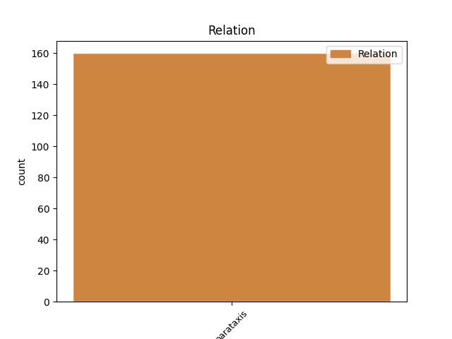
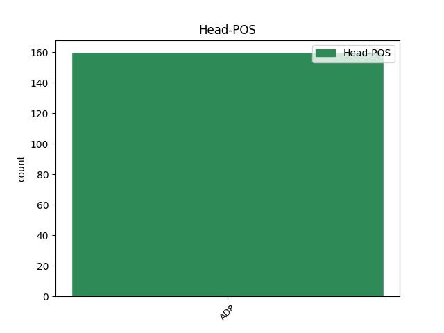
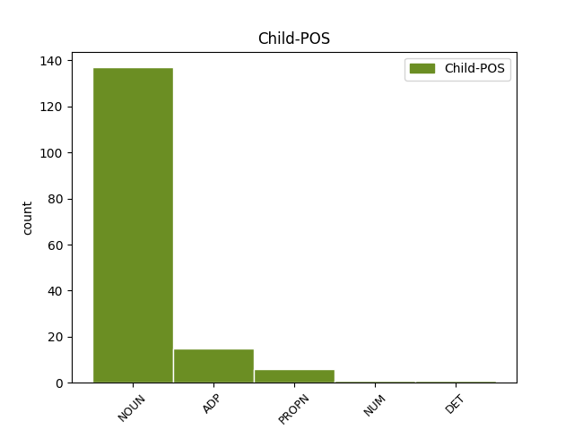

Distribution of features within this leaf



Agreement Rules sorted by frequency.
- When the dependent token is the parataxis(parataxis) of the head token, and the head token is ADP and the dependent token is NOUN.
1 Zbog _ _ _ _ 0 _ _ _
2 toga _ _ _ _ 0 _ _ _
3 je _ _ _ _ 0 _ _ _
4 euro _ _ _ _ 0 _ _ _
5 bio _ _ _ _ 0 _ _ _
6 pod _ _ _ _ 0 _ _ _
7 snažnim _ _ _ _ 0 _ _ _
8 pritiskom _ _ _ _ 0 _ _ _
9 , _ _ _ _ 0 _ _ _
10 pa _ _ _ _ 0 _ _ _
11 je _ _ _ _ 0 _ _ _
12 početkom _ _ _ _ 0 _ _ _
13 tjedna _ _ _ _ 0 _ _ _
14 njegov _ _ _ _ 0 _ _ _
15 tečaj _ _ _ _ 0 _ _ _
16 potonuo _ _ _ _ 0 _ _ _
17 na na ADP Sa Case=Acc 0 _ _ _
18 samo _ _ _ _ 0 _ _ _
19 1,3446 _ _ _ _ 0 _ _ _
20 dolara _ _ _ _ 0 _ _ _
21 , _ _ _ _ 0 _ _ _
22 najnižu _ _ _ _ 0 _ _ _
23 razinu razina NOUN Ncfsa Case=Acc|Gender=Fem|Number=Sing 17 parataxis _ _
24 u _ _ _ _ 0 _ _ _
25 7 _ _ _ _ 0 _ _ _
26 tjedana _ _ _ _ 0 _ _ _
27 . _ _ _ _ 0 _ _ _
1 Čopor _ _ _ _ 0 _ _ _
2 Risnjak _ _ _ _ 0 _ _ _
3 glavninu _ _ _ _ 0 _ _ _
4 vremena _ _ _ _ 0 _ _ _
5 provodi _ _ _ _ 0 _ _ _
6 u _ _ _ _ 0 _ _ _
7 području _ _ _ _ 0 _ _ _
8 između _ _ _ _ 0 _ _ _
9 Crnog _ _ _ _ 0 _ _ _
10 Luga _ _ _ _ 0 _ _ _
11 , _ _ _ _ 0 _ _ _
12 Delnica _ _ _ _ 0 _ _ _
13 i _ _ _ _ 0 _ _ _
14 Lokvi _ _ _ _ 0 _ _ _
15 , _ _ _ _ 0 _ _ _
16 ali _ _ _ _ 0 _ _ _
17 zalazi _ _ _ _ 0 _ _ _
18 i _ _ _ _ 0 _ _ _
19 s sa ADP Sg Case=Gen 0 _ _ _
20 druge _ _ _ _ 0 _ _ _
21 strane _ _ _ _ 0 _ _ _
22 planine _ _ _ _ 0 _ _ _
23 Risnjak _ _ _ _ 0 _ _ _
24 - _ _ _ _ 0 _ _ _
25 do do ADP Sg Case=Gen 19 parataxis _ _
26 livade _ _ _ _ 0 _ _ _
27 Lazac _ _ _ _ 0 _ _ _
28 , _ _ _ _ 0 _ _ _
29 Vilja _ _ _ _ 0 _ _ _
30 , _ _ _ _ 0 _ _ _
31 Suhe _ _ _ _ 0 _ _ _
32 Rečine _ _ _ _ 0 _ _ _
33 i _ _ _ _ 0 _ _ _
34 Gornjeg _ _ _ _ 0 _ _ _
35 Jelenja _ _ _ _ 0 _ _ _
36 . _ _ _ _ 0 _ _ _
1 Rusija _ _ _ _ 0 _ _ _
2 želi _ _ _ _ 0 _ _ _
3 ući _ _ _ _ 0 _ _ _
4 u _ _ _ _ 0 _ _ _
5 partnerstvo _ _ _ _ 0 _ _ _
6 s sa ADP Si Case=Ins 0 _ _ _
7 četiri _ _ _ _ 0 _ _ _
8 balkanske _ _ _ _ 0 _ _ _
9 zemlje _ _ _ _ 0 _ _ _
10 -- _ _ _ _ 0 _ _ _
11 Albanijom Albanija PROPN Npfsi Case=Ins|Gender=Fem|Number=Sing 6 parataxis _ SpaceAfter=No
12 , _ _ _ _ 0 _ _ _
13 Makedonijom _ _ _ _ 0 _ _ _
14 , _ _ _ _ 0 _ _ _
15 Crnom _ _ _ _ 0 _ _ _
16 Gorom _ _ _ _ 0 _ _ _
17 i _ _ _ _ 0 _ _ _
18 Srbijom _ _ _ _ 0 _ _ _
19 - _ _ _ _ 0 _ _ _
20 u _ _ _ _ 0 _ _ _
21 pokušaju _ _ _ _ 0 _ _ _
22 da _ _ _ _ 0 _ _ _
23 presiječe _ _ _ _ 0 _ _ _
24 krijumčarenje _ _ _ _ 0 _ _ _
25 narkotika _ _ _ _ 0 _ _ _
26 . _ _ _ _ 0 _ _ _
1 Europski _ _ _ _ 0 _ _ _
2 vođe _ _ _ _ 0 _ _ _
3 moraju _ _ _ _ 0 _ _ _
4 progurati _ _ _ _ 0 _ _ _
5 sustav _ _ _ _ 0 _ _ _
6 političkih _ _ _ _ 0 _ _ _
7 i _ _ _ _ 0 _ _ _
8 financijskih _ _ _ _ 0 _ _ _
9 sankcija _ _ _ _ 0 _ _ _
10 koji _ _ _ _ 0 _ _ _
11 se _ _ _ _ 0 _ _ _
12 može _ _ _ _ 0 _ _ _
13 provesti _ _ _ _ 0 _ _ _
14 , _ _ _ _ 0 _ _ _
15 sa _ _ _ _ 0 _ _ _
16 strogim _ _ _ _ 0 _ _ _
17 kaznama _ _ _ _ 0 _ _ _
18 za za ADP Sa Case=Acc 0 _ _ _
19 prekršitelje _ _ _ _ 0 _ _ _
20 fiskalnih _ _ _ _ 0 _ _ _
21 smjernica _ _ _ _ 0 _ _ _
22 , _ _ _ _ 0 _ _ _
23 posebice _ _ _ _ 0 _ _ _
24 one onaj DET Pd-mpa Case=Acc|Gender=Masc|Number=Plur|PronType=Dem 18 parataxis _ _
25 koji _ _ _ _ 0 _ _ _
26 ih _ _ _ _ 0 _ _ _
27 se _ _ _ _ 0 _ _ _
28 u _ _ _ _ 0 _ _ _
29 više _ _ _ _ 0 _ _ _
30 navrata _ _ _ _ 0 _ _ _
31 ne _ _ _ _ 0 _ _ _
32 pridržavaju _ _ _ _ 0 _ _ _
33 . _ _ _ _ 0 _ _ _
Disagree Examples:
1 Predsjednik _ _ _ _ 0 _ _ _
2 Ahmet _ _ _ _ 0 _ _ _
3 Necdet _ _ _ _ 0 _ _ _
4 Sezer _ _ _ _ 0 _ _ _
5 potpisao _ _ _ _ 0 _ _ _
6 je _ _ _ _ 0 _ _ _
7 u u ADP Sa Case=Acc 0 _ _ _
8 petak _ _ _ _ 0 _ _ _
9 ( _ _ _ _ 0 _ _ _
10 21. _ _ _ _ 0 _ _ _
11 svibanj svibanj NOUN Ncmsn Case=Nom|Gender=Masc|Number=Sing 7 parataxis _ SpaceAfter=No
12 ) _ _ _ _ 0 _ _ _
13 ustavne _ _ _ _ 0 _ _ _
14 izmjene _ _ _ _ 0 _ _ _
15 . _ _ _ _ 0 _ _ _
1 Predsjednik _ _ _ _ 0 _ _ _
2 Ahmet _ _ _ _ 0 _ _ _
3 Necdet _ _ _ _ 0 _ _ _
4 Sezer _ _ _ _ 0 _ _ _
5 potpisao _ _ _ _ 0 _ _ _
6 je _ _ _ _ 0 _ _ _
7 u u ADP Sa Case=Acc 0 _ _ _
8 petak _ _ _ _ 0 _ _ _
9 ( _ _ _ _ 0 _ _ _
10 21. _ _ _ _ 0 _ _ _
11 svibanj svibanj NOUN Ncmsn Case=Nom|Gender=Masc|Number=Sing 7 parataxis _ SpaceAfter=No
12 ) _ _ _ _ 0 _ _ _
13 ključni _ _ _ _ 0 _ _ _
14 paket _ _ _ _ 0 _ _ _
15 ustavnih _ _ _ _ 0 _ _ _
16 izmjena _ _ _ _ 0 _ _ _
17 , _ _ _ _ 0 _ _ _
18 s _ _ _ _ 0 _ _ _
19 ciljem _ _ _ _ 0 _ _ _
20 približavanja _ _ _ _ 0 _ _ _
21 domaćeg _ _ _ _ 0 _ _ _
22 zakonodavstva _ _ _ _ 0 _ _ _
23 standardima _ _ _ _ 0 _ _ _
24 EU _ _ _ _ 0 _ _ _
25 . _ _ _ _ 0 _ _ _
1 Sljedeća _ _ _ _ 0 _ _ _
2 tri _ _ _ _ 0 _ _ _
3 mjeseca _ _ _ _ 0 _ _ _
4 bit _ _ _ _ 0 _ _ _
5 će _ _ _ _ 0 _ _ _
6 ključna _ _ _ _ 0 _ _ _
7 za _ _ _ _ 0 _ _ _
8 hrvatsku _ _ _ _ 0 _ _ _
9 kandidaturu _ _ _ _ 0 _ _ _
10 da _ _ _ _ 0 _ _ _
11 postane _ _ _ _ 0 _ _ _
12 28. _ _ _ _ 0 _ _ _
13 članica _ _ _ _ 0 _ _ _
14 EU _ _ _ _ 0 _ _ _
15 2010. _ _ _ _ 0 _ _ _
16 godine _ _ _ _ 0 _ _ _
17 , _ _ _ _ 0 _ _ _
18 izjavio _ _ _ _ 0 _ _ _
19 je _ _ _ _ 0 _ _ _
20 visoki _ _ _ _ 0 _ _ _
21 dužnosnik _ _ _ _ 0 _ _ _
22 Europske _ _ _ _ 0 _ _ _
23 komisije _ _ _ _ 0 _ _ _
24 ( _ _ _ _ 0 _ _ _
25 EC _ _ _ _ 0 _ _ _
26 ) _ _ _ _ 0 _ _ _
27 u u ADP Sa Case=Acc 0 _ _ _
28 utorak _ _ _ _ 0 _ _ _
29 ( _ _ _ _ 0 _ _ _
30 8. _ _ _ _ 0 _ _ _
31 travnja travanj NOUN Ncmsg Case=Gen|Gender=Masc|Number=Sing 27 parataxis _ SpaceAfter=No
32 ) _ _ _ _ 0 _ _ _
33 , _ _ _ _ 0 _ _ _
34 pozivajući _ _ _ _ 0 _ _ _
35 Zagreb _ _ _ _ 0 _ _ _
36 na _ _ _ _ 0 _ _ _
37 ubrzanje _ _ _ _ 0 _ _ _
38 reformskih _ _ _ _ 0 _ _ _
39 napora _ _ _ _ 0 _ _ _
40 . _ _ _ _ 0 _ _ _
1 Američki _ _ _ _ 0 _ _ _
2 predsjednik _ _ _ _ 0 _ _ _
3 George _ _ _ _ 0 _ _ _
4 W. _ _ _ _ 0 _ _ _
5 Bush _ _ _ _ 0 _ _ _
6 ( _ _ _ _ 0 _ _ _
7 lijevo _ _ _ _ 0 _ _ _
8 ) _ _ _ _ 0 _ _ _
9 razgovara _ _ _ _ 0 _ _ _
10 s sa ADP Si Case=Ins 0 _ _ _
11 makedonskim _ _ _ _ 0 _ _ _
12 predsjednikom _ _ _ _ 0 _ _ _
13 Brankom _ _ _ _ 0 _ _ _
14 Crvenkovskim _ _ _ _ 0 _ _ _
15 ( _ _ _ _ 0 _ _ _
16 u u ADP Sl Case=Loc 10 parataxis _ _
17 sredini _ _ _ _ 0 _ _ _
18 ) _ _ _ _ 0 _ _ _
19 i _ _ _ _ 0 _ _ _
20 premijerom _ _ _ _ 0 _ _ _
21 Nikolom _ _ _ _ 0 _ _ _
22 Gruevskim _ _ _ _ 0 _ _ _
23 na _ _ _ _ 0 _ _ _
24 prošlotjednom _ _ _ _ 0 _ _ _
25 samitu _ _ _ _ 0 _ _ _
26 NATO-a _ _ _ _ 0 _ _ _
27 u _ _ _ _ 0 _ _ _
28 Bukureštu _ _ _ _ 0 _ _ _
29 . _ _ _ _ 0 _ _ _
1 U u ADP Sa Case=Acc 0 _ _ _
2 ponedjeljak _ _ _ _ 0 _ _ _
3 ( _ _ _ _ 0 _ _ _
4 7. _ _ _ _ 0 _ _ _
5 travnja travanj NOUN Ncmsg Case=Gen|Gender=Masc|Number=Sing 1 parataxis _ SpaceAfter=No
6 ) _ _ _ _ 0 _ _ _
7 , _ _ _ _ 0 _ _ _
8 vlada _ _ _ _ 0 _ _ _
9 je _ _ _ _ 0 _ _ _
10 priopćila _ _ _ _ 0 _ _ _
11 kako _ _ _ _ 0 _ _ _
12 će _ _ _ _ 0 _ _ _
13 ovog _ _ _ _ 0 _ _ _
14 tjedna _ _ _ _ 0 _ _ _
15 početi _ _ _ _ 0 _ _ _
16 razgovore _ _ _ _ 0 _ _ _
17 u _ _ _ _ 0 _ _ _
18 cilju _ _ _ _ 0 _ _ _
19 rješavanja _ _ _ _ 0 _ _ _
20 postojećeg _ _ _ _ 0 _ _ _
21 spora _ _ _ _ 0 _ _ _
22 oko _ _ _ _ 0 _ _ _
23 naziva _ _ _ _ 0 _ _ _
24 s _ _ _ _ 0 _ _ _
25 Grčkom _ _ _ _ 0 _ _ _
26 , _ _ _ _ 0 _ _ _
27 koji _ _ _ _ 0 _ _ _
28 je _ _ _ _ 0 _ _ _
29 Makedoniju _ _ _ _ 0 _ _ _
30 koštao _ _ _ _ 0 _ _ _
31 pozivnice _ _ _ _ 0 _ _ _
32 u _ _ _ _ 0 _ _ _
33 NATO _ _ _ _ 0 _ _ _
34 . _ _ _ _ 0 _ _ _